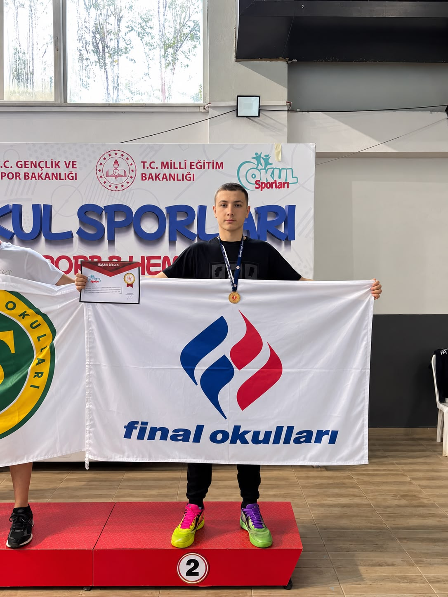
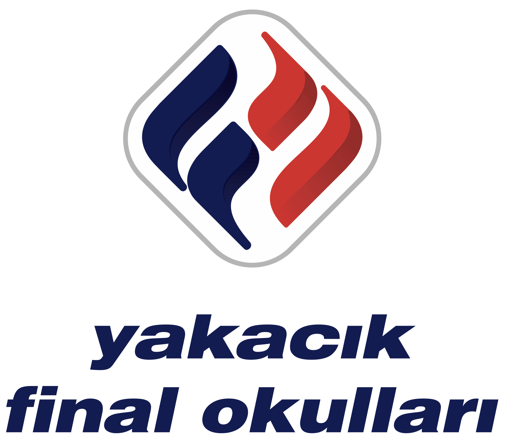

TEBRİKLER BORA!
24–26 KASIM 2026
İSTANBUL OKUL SPORLARI · GENÇLER YÜZME
BORA MEHMET ÇELİKDEMİR
Özel Yakacık Final Anadolu Lisesi · İki İstanbul İkinciliği
2
50 M SERBEST
İstanbul 2.si
2
100 M SERBEST
İstanbul 2.si
4
50 M SIRTÜSTÜ
İstanbul 4.sü
